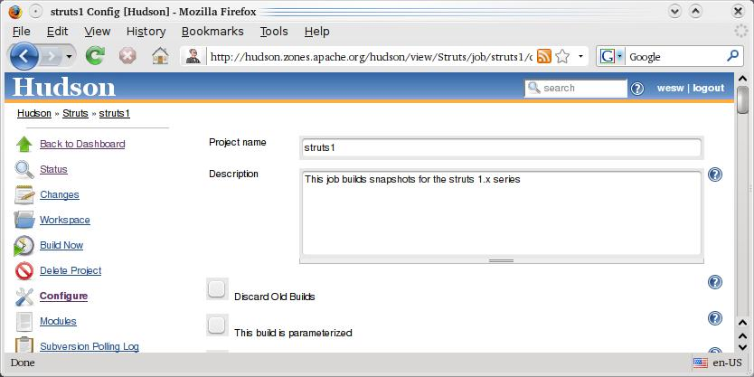
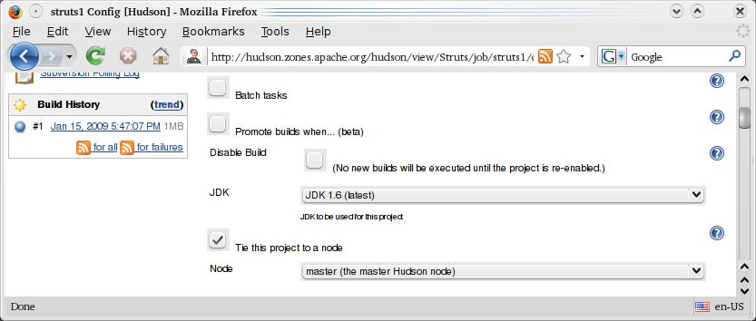
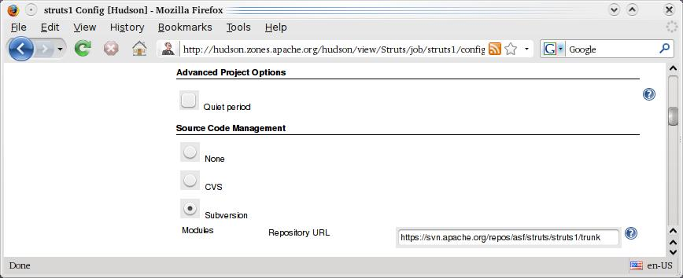
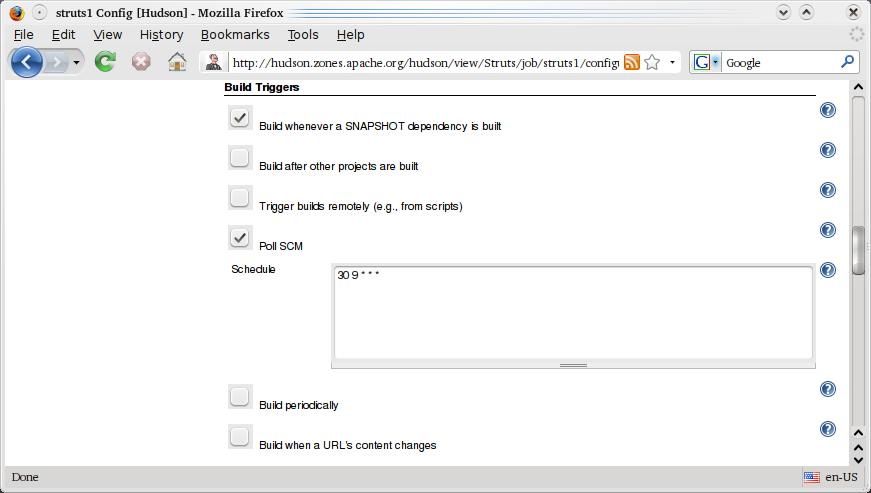
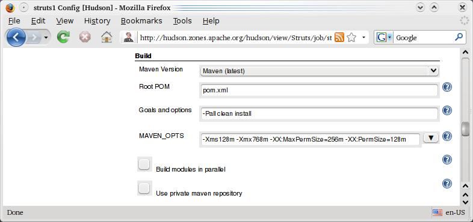
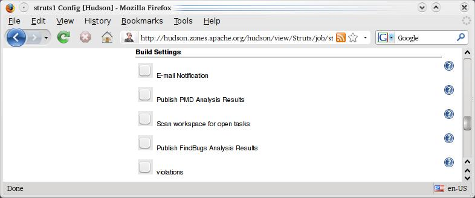
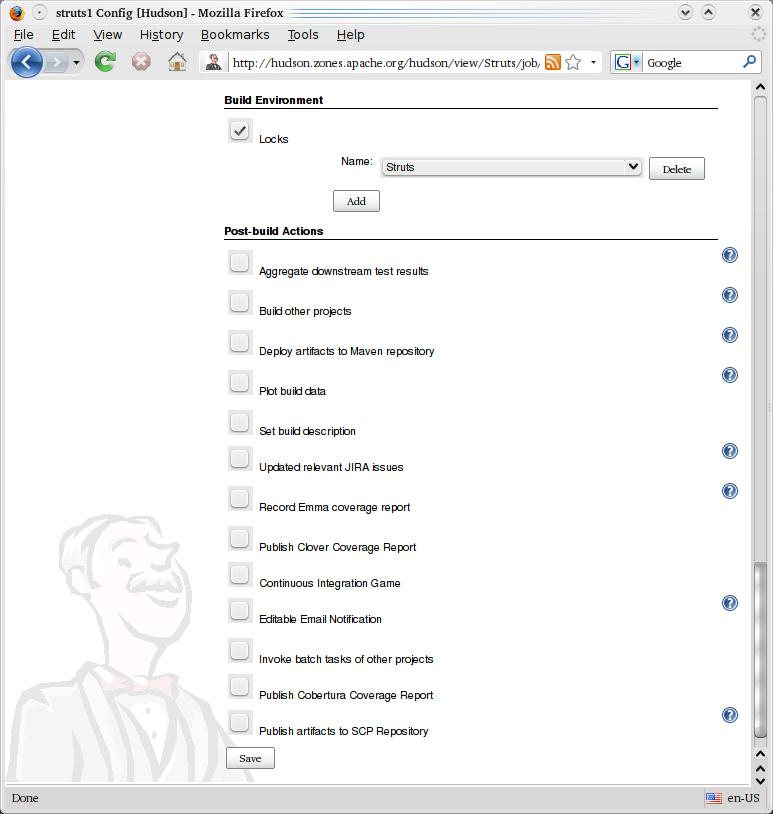
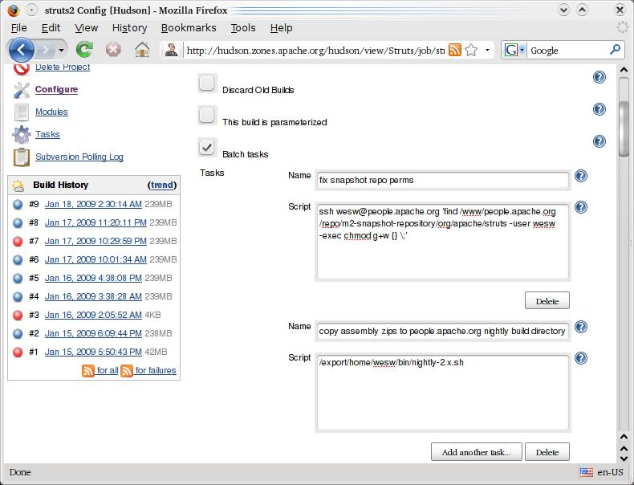
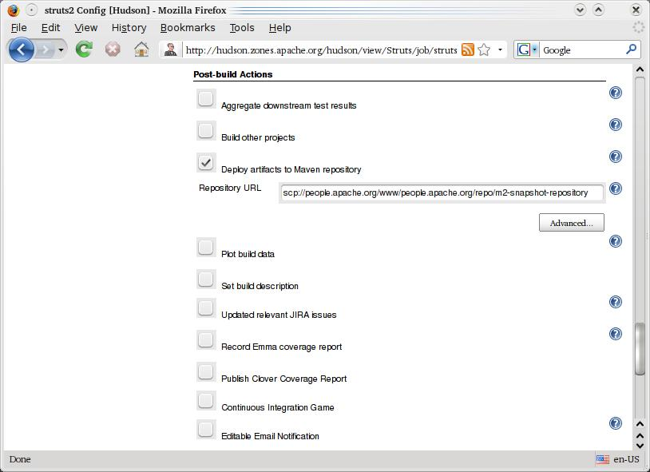
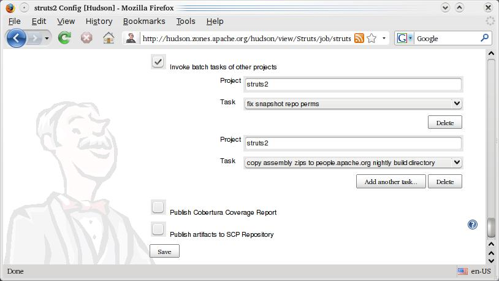

Apache Struts Pseudo-Nightly Builds on Apache Hudson
Apache Struts has moved their Continuous Integration builds over to the Apache owned instance of Hudson. Hudson is a popular open source CI server with a plugin interface that allows for flexible building and management. More information and documentation about Hudson is available here - https://hudson.dev.java.net/. Out of the box, Hudson supports SVN and Apache Maven, which makes it a good fit for Apache Struts. The Apache instance of Hudson is used by a few other projects, but has more than enough cycles available for our needs. One advantage of using Hudson hosted by Apache is that other committers will be able to gain access to both the Hudson web-app performing the builds and the host that houses the Hudson web-app. To request access to the Hudson zone and Hudson web-app, any PMC member can follow the instructions outlined here - http://wiki.apache.org/general/Hudson.
User Information
Hudson is currently setup to perform our SNAPSHOT builds. SNAPSHOT builds are not considered stable, but many developers use these builds because they will often contain the latest features and fixes. The price for using the latest and greatest is that you run the risk of stumbling across previously undiscovered bugs. If you are using a SNAPSHOT build and encounter a problem with the framework, then you should first ask about the problem on the user@struts.apache.org mailing list. Most of the Struts developers actively provide support on the user mailing list and will most likely indicate whether there is a workaround or if a bug report should be filed. To join the mailing list, follow the instructions here, bugs are filed here.
To see the results of the latest and previous Hudson builds, you can visit the Struts view on Hudson here. As part of the build process, Hudson is configured to deploy the artifacts to the snapshot repository. Rather than downloading the artifacts directly from Hudson, it is easier to configure your project to grab the snapshots from the snapshot repository. This is quite easy if you are using Maven, check here for information on adding the Struts Snapshot Repository. If you do not use Maven, Hudson also pushes out downloadable copies of our libraries, documentation and reference applications. You can download those here. We refer to these zips as "Pseudo-Nightly" builds because they will be generated once a day, if there has been a change to the source code since the last time the zips were generated. There will be a fixed number of the zips laying around in this folder since recent changes are not always fully tested. This way, you can grab a build from a few builds ago in case a recent change is causing problems. The name of the zip file includes the date and time that the file was transferred to the web server. The transfer happens for each successful build, but the transfer can also be launched manually.
Build Setup - High Level
Hudson's build facility is somewhat simple. You tell it where to grab the source and then it will build. Each build will checkout what you tell it to and begin building from the directory you specify. This only presents a few minor problems. My first thought was to check out the entire source tree and then dive into each individual directory (maven, struts1, struts2, sandbox) and launch a build. This did not work since Hudson wants to do one build at a time. Also, it does not allow you (as far as I could tell) to specify the same workspace for subsequent builds. Fortunately, this was relatively easy to work around. The Struts 1. x and Struts 2.x builds depend on the struts-master and struts-annotations artifacts. Although these artifacts are published to the public Maven repositories, they contain information that the other builds need. For instance, the top-level pom.xml in the struts2 source directory declares struts-master as it's parent. To make this work, I setup struts-master and struts-annotations as their own builds in Hudson. The build setup for these two simply points to their source directory in SVN and runs the clean and install maven goals. This way, both artifacts are installed into the local maven repository for Hudson. After that, I setup builds for both the struts1 and struts2 directories in SVN.
Build Setup - Struts 1.x
The Struts 1.x build is done the same way that a person would do it. Hudson is directed to check for changes in SVN, if the source has changed since the last build, launch a new build. Let's take a look at the current setup -

Currently, the build is not setup to throw away previous builds or enable parameters. There are no needs for parameterized builds since Hudson allows us to specify the Maven goals we want to build. No one has complained yet about the space we are taking up on the Hudson zone, so there is also no need to throw away previous builds. Moving down a little further -

The Struts 1.x build does not currently require any batch tasks. In the Struts 2.x builds, as you will see below, batch tasks are used to fix permissions and push out the nightlies from the assembly goal. More on this later. We do not use the "Promote Builds" functionality. The option to "Disable Build" is left unchecked so that builds will happen as scheduled. If there is a compile problem and Hudson is spamming the dev@struts.apache.org mailing list, this option can be checked to stop Hudson from attempting to build while we work on a solution. JDK 6 is used for the builds, but this should not cause any problems since our pom.xml files seem to all specify that the target platform is 1.5. The "Tie Project to Node" box is checked because I want the builds to happen on the Hudson zone. Since struts-master is installed into the Hudson zone's hudson user, I am not sure if pushing the build to another node would work. This option forces builds to stay on the Hudson zone server. Moving along -

The "Quiet Period" is not used. This feature can be useful if commits were done in a way that meant that builds should wait a bit before beginning. Since we are only checking SVN once daily for this build, there is no need for a "Quiet Period." The Source Repository points directly to the trunk struts1 directory. Hudson will check out struts1/trunk and create a workspace from there. Moving along -

The "local module directory" option allows us to specify a name for the folder that gets checked out. Otherwise, it would be named "trunk," so I went ahead and called it struts1. By checking the "use update" option, the builds will go faster. The downside is that unversioned files may stick around in the workspace. To remedy this, I run the "clean" goal as part of the build. I also leave it up to Hudson to try to figure out which repository browser is in place. Moving along -

This screencap shows the triggers that can cause Hudson to launch a build. The first option, when SNAPSHOT dependencies are built, is likely never to launch a build in our case. Currently, we are not using any external SNAPSHOT dependencies, and as far as I know, Hudson would only know if a SNAPSHOT dependency is built if this instance of Hudson builds it. I am leaving it checked as a just-in-case type of trigger. The second option checked, Poll SCM, is likely to be the trigger that fires our builds. The current schedule "30 9 * * *" is very similar to CRON. The struts1 build is scheduled to check SVN every day at 9:30AM. If it detects a change since the last build, a full build will begin. Moving along -

The Maven configuration is straightforward. The Heap and PermGen settings were added because I have had problems on Linux building without them. We do not use a private repository because we all of our external dependencies are non-SNAPSHOT. The modules are not currently built in parallel, but if the length of time to build becomes an issue, we could try turning this one. Moving along -

None of these build settings are currently enabled. In the next few days I will try to enable the notification emails so that successful or failed builds are sent to dev@struts.apache.org. Currently no emails are sent because I have been making frequent changes to the build configurations. Moving along -

The build lock is setup so that we only perform one struts build at a time on Hudson. Part of this is based on wanting to be a good guest on the Apache Hudson instance, but this lock may also become necessary if we begin building sandbox artifacts.
The struts1 build is an easy-to-follow setup and has run a few times without problems. Next, we will take a look at the struts2 build which is very similar but has configuration added to handle deployment of SNAPSHOTs and the zips from the assembly module.
Build Setup - Struts 2.x
The Struts 2.x build is very similar to the Struts 1.x builds. There is added logic for deploying SNAPSHOT artifacts and pushing nightly builds from the assembly module. Let's take a look at the configuration -

The batch task setup for Hudson allows for tasks to be executed as part of a build. The tasks configured here are the sort of things that would generally be run manually. This facility allows tasks to be run in a way that is tracked. Adding tasks to this section of the configuration does not mark the tasks to be run automatically, it simply makes them available. Further down in the configuration, the tasks are flagged to be run after the build is complete.
The first batch task listed will log into people.apache.org and add the group writeable flag to all the files that this build just deploys. Hudson logs into people.apache.org as 'wesw' because the public ssh key for the hudson user account on the hudson zone is setup in the 'wesw' account on people.apache.org. Since Hudson logs into people.apache.org as 'wesw,' when SNAPSHOT artifacts are deployed, they are owned by 'wesw.' The umask is setup on people.apache.org so that files are created with group read but not group write permissions. Changing the permissions allows other struts developers (other than 'wesw') to make changes or manually push the files from somewhere other than Hudson.
The second batch task publishes the nightly files by calling a shell script. The contents of the script are listed below -
#!/bin/bash TODAY=`date +%Y%m%d%H%M` TARGET_BASE=wesw@people.apache.org TARGET_DIR=/www/people.apache.org/builds/struts/nightlies/2.x TARGET_URL=$TARGET_BASE:$TARGET_DIR for zip in $(ls struts2/assembly/target/assembly/out/*.zip); do BASE_NAME=`basename $zip .zip` scp $zip $TARGET_URL/$BASE_NAME-$TODAY.zip done ssh $TARGET_BASE "chmod g+w $TARGET_DIR/*.zip"
The logic in the shell script is copied quite a bit from James Mitchell's previous nightly script (thank James!). Currently, there is no logic for removing old files. I will add this as soon as more than 5 copies of the assembly zips have been published. This script is group writeable, so other developers can make changes to it. If Wes Wannemacher is unavailable, then this script can be copied to another location on the hudson zone and manipulated as necessary. Then, the struts2 job configuration can be updated as necessary.
Much of the struts2 job's configuration is identical, or only slightly modified (such as pointing to the struts2 folder in SVN) from the struts1 configuration. The next significant differences come up in the Post-build section. Let's take a look -

The struts2 job performs the maven clean and install goals, but then leaves the snapshot deployments up to Hudson as a post-build action. This is done because this is a multi-module build. If the deploy goal were specified as part of the build, it is possible that some artifacts would be deployed and other would not. Having hudson do deployments as a post-build action means that deployment will happen as a separate step after the builds complete successfully. Moving along -

The tasks configured above are specified here to run as post-build actions. Although these tasks are tied to this build, and will happen with each successful build, they can also be launched manually from within Hudson. The Hudson job configuration allows you to specify tasks from any job, so it would be prudent to make sure scripts and commands operate in a way that they could be launched from any other Apache Struts build job (such as reusing the nightly-2.x.sh script to publish struts1 zips as well).